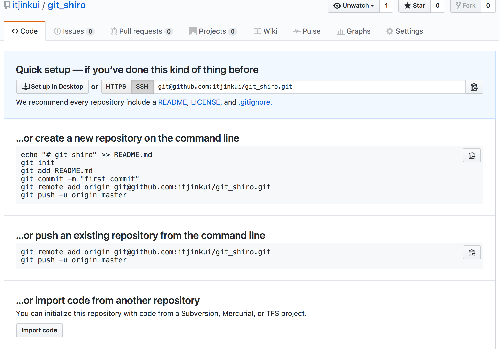

#Git 闲话
1、最近阅读《数学之美》、《浪潮之巅》惊叹于大神的眼界、文化功底，所以就在得到专栏上订阅了吴军博士的硅谷来信。总之，就是膜拜了。想了解一个人，就先了解一个的思想对不对，所谓见贤与之思齐就是这样了。
2、接下来说一说我心目中的另一位大神 林纳斯•托瓦兹，编程界公认的啊。
“我不是个有远见的人，我是一名工程师，”托瓦兹说，“我非常乐意跟梦想家在一起，他们行走四方，仰望苍穹……但我是低头看路的那种人，我只想填好眼前这个坑，不让自己掉进去。“
只干了两件事啊，毫不夸张的说：惊天地泣鬼神。
第一件是开发出Linux内核，驱动了因特网，第二件是开发出Git，一种源代码管理系统，被全世界开发者广泛使用。
再接下来，Git 就是我们的主题了，记录以备忘。
Git安装与配置
安装
Mac 上brew安装算是最便捷的了
|
|
配置
可以通过 git config –list –global 命令来查看：
|
|
可以看到有两个alias出现，这里使用了别名。
配置别名
这个功能在shell中是很常用的。我们可以做一些别名来取代比较复杂的指令。
比如上面就是使用了以下两个配置
|
|
身份认证
当本地git仓库与git远程仓库通信的时候，需要进行SSH身份认证。
打开根目录下的.ssh目录：
|
|
如果没有id_rsa和id_rsa.pub这两个文件，就通过如下的命令生成：
ssh-keygen -t rsa -C “youremail@example.com”
id_rsa和id_rsa.pub这两个文件，就是SSH Key的秘钥对，id_rsa是私钥，id_rsa.pub是公钥，用在github上表明身份。
在GitHub上的SSH keys中添加刚刚生成的key。(id_rsa.pub)
创建Git仓库
创建一个目录，并cd到目录下，通过调用git init来将现有目录初始化为git仓库，或者直接在git init后面跟上目录名，同样也可以创建一个新的仓库。
git clone 直接clone一个远程仓库也是可以的。
提交修改
|
|
查看修改
修改README.md文件，git st查看修改
|
|
Git 比较不同版本文件差异的常用命令格式：
git diff 查看尚未暂存的文件更新了哪些部分
git diff filename 查看尚未暂存的某个文件更新了哪些
git diff –cached 查看已经暂存起来的文件和上次提交的版本之间的差异
git diff –cached filename 查看已经暂存起来的某个文件和上次提交的版本之间的差异
使用git diff README.md 命令看一下修改的具体内容
diff –git a/README.md b/README.md
index e8281cd..f1729fb 100644
— a/README.md
+++ b/README.md
@@ -1 +1 @@
-this’s ok.
+this’s ok,modify.
add和commit之后，我们都使用status来查看下状态，可以发现，在commit之后，git提示我们，工作区是干净的。
|
|
版本记录
使用git lg 命令来查看
也可以使用gitk命令来查看图形化的log记录
工作区与暂存区
Git通常是工作在三个区域上：
工作区
暂存区
历史区
其中工作区就是我们平时工作、修改代码的区域；而历史区，用来保存各个版本；而暂存区，则是Git的核心所在。
Git官网
图解Git
版本回退
回退版本是必不可少的操作啊
我们来考虑以下常见的几种情况：
- 文件已经修改，但是还没有git add
- 文件已经add到暂存区，又作了修改
- 文件的修改已经add到了暂存区
分别执行以下操作：
➜git checkout – README.md
修改被删除，完全还原到上次commit的状态，也就是服务器版本(1.)
最后的修改被删除，还原到上次add的状态，也就是修改前的暂存区状态(2.)
➜git reset HEAD README.md(3.)
|
|
通过git reset HEAD README.md，我们就把暂存区的文件清除了。这样，在本地就是add前的状态，通过checkout操作，就可以进行修改回退了。
在Git中，用HEAD表示当前版本，上一个版本就是HEAD^，
上上一个版本就是HEAD^^。（git reset –hard HEAD）
要回退到哪个版本，也可以写commit id。
前进版本
如果我们回退到了旧的版本，但是却后悔了想回到后面某个新的版本,git reflog 查看操作历史。找到 commit id。
版本号没必要写全，前7位就可以了，Git会自动去找。
文件暂存
这里的暂存不是前面说的暂存区，而是只一次备份与恢复操作。
git stash
指令来将当前修改暂存，这样就可以切换到其他分支或者就在当前干净的分支上checkout了。
比如你checkout了一个issue分支，修改了bug，使用git merge合并到了master分支，删除issue分支，切换到dev分支，想继续之前的新功能开发。
这时候，就需要恢复现场了：
git stash list
指令来查看当前暂存的内容记录。
然后，通过git stash apply或者git stash pop来进行恢复，它们的区别是，前者不会删除记录（当然你可以使用git stash drop来删除），而后者会。
远程仓库&同步协作
现在你在本地建立了git仓库，想与远程git仓库同步。
我们先在github上创建一个repo（仓库），
创建之后，github给我们提示：

可以看出，执行以下指令就和远程仓库建立关联了，自然也就可以多人同步协作开发了。
|
|
结语
git 入门操作算是完成了。企业可以通过GitLab搭建自己的版本管理系统。